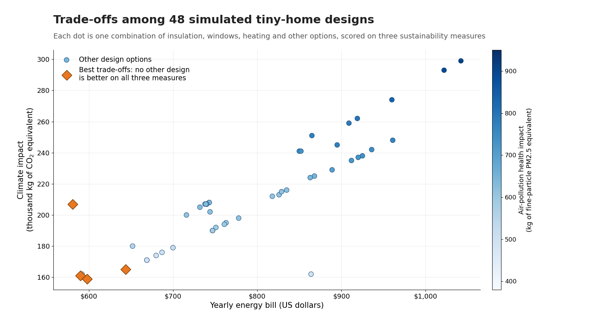
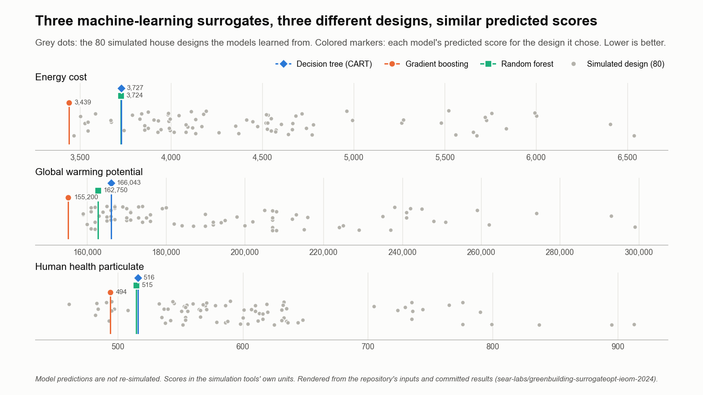

Research Experiences for Teachers: Green Building
The SEAR Lab's project in UTA's NSF RET Site: K-12 teachers evaluate green building designs and carry that research into their classrooms.
- Completed
- 2021–2025
- Education and workforce
- Buildings
- Sustainability
- Design of experiments

In plain English
Design choices such as insulation, windows and heating systems shape a building's energy bills, emissions and health effects for decades. UTA's National Science Foundation Research Experiences for Teachers (RET) Site on Sustainable and Resilient Infrastructure for Urban Communities, led by Dr. Nur Yazdani of Civil Engineering, places teachers in several research projects each summer. In the SEAR Lab's project, Sustainability Assessment for Green Building and Retrofitting, Dr. Jones and Dr. Victoria Chen of Industrial, Manufacturing, and Systems Engineering mentored junior high and high school teachers through six-week summer research on sustainable building design, then helped them carry that work into their classrooms.
Four teacher cohorts took part from 2022 to 2025. Using building simulation software (eQUEST for energy use and ATHENA for life-cycle impacts), teachers studied a tiny home designed at UTA and other buildings. They followed a four-step process: calibrate a computer model, design a set of experiments, run them, and analyze the results, scoring each design on annual energy cost, global warming potential and particulate pollution. Later cohorts added machine learning and optimization. The teams presented at ASEE conferences in 2023, 2024 and 2025, and a follow-on RET Site on artificial intelligence for sustainable infrastructure runs from 2025 to 2030.
Main points
- Four cohorts of junior high and high school teachers spent six-week summers at UTA doing sustainable-building research between 2022 and 2025.
- Teachers scored building designs on three sustainability measures: annual energy cost (prosperity), global warming potential (planet) and human health particulate (people).
- The 2022 cohort simulated 48 tiny-home designs and the 2023 cohort added 32 more, then used regression trees to find which design options mattered most.
- Teachers turned the research into classroom lesson plans, and one teacher built a 3D-printed model of the tiny home.
- Three peer-reviewed ASEE conference papers (2023, 2024 and 2025) describe the training approach and what the teachers found.
Papers
Machine learning plus optimization to pick greener house designs
Aghapour, R., Jones, E.C., Jr., & Alavi, S. (2024). Green building design surrogate optimization: Exploring off the shelf machine learning and mixed integer programming integrations. Proceedings of the 9th North American Conference on Industrial Engineering and Operations Management, Washington, D.C., 558–568. https://doi.org/10.46254/NA09.20240139
Three off-the-shelf machine-learning models, trained on 80 simulated house designs, each pick a different design with similar predicted cost, emissions and health scores.
- The three models recommend different designs: gradient boosting adds roof, wall and ceiling insulation and triple-pane low-emissivity glass, while the decision tree and random forest keep double-pane glass and little added insulation.
- All three agree on the rest of the design: an aluminum-painted roof, a dark wall finish, aluminum window frames with a thermal break, a packaged variable-volume-and-temperature (VVT) system with direct-expansion (DX) coils, and a gas storage water heater.
- Gradient boosting predicts the best scores on all three measures (energy cost 3,439, global warming potential 155,200 and health particulate 494, in the simulation tools' units), against about 3,724 to 3,727, 162,750 to 166,043 and 515 to 516 for the other two models.
- For each model, the design that is best for one measure is also best for the other two, so optimizing all three together gives the same answer as optimizing each alone.

Code and materials
- RelatedNSF RET Site on Sustainable and Resilient Infrastructure for Urban Communities: the full program website
- PaperJones et al. (2023), Training teachers to integrate a sustainability assessment for green building and retrofitting project into a K-12 classroom, ASEE Gulf Southwest Annual Conference
- PaperThomason et al. (2024), Training teachers to employ design and analysis of computer experiments for research on sustainable building design, ASEE Annual Conference & Exposition
- PaperZagozda et al. (2025), Bringing college level engineering research experiences into the K-12 classroom, ASEE Gulf Southwest Annual Conference
People
- Dr. Nur Yazdani, PEPrincipal Investigator, NSF RET Site · Tseng Huang Endowed Professor, Civil Engineering
- Dr. Melanie Sattler, PECo-Principal Investigator, NSF RET Site · Syed Qasim Endowed Professor & Department Chair, Civil Engineering
- Erick C. Jones Jr., PhD, PERET faculty mentor (both sites) · Co-Principal Investigator, RET Site 2025–2030in
- Victoria C. P. ChenRET faculty mentor · Author, ASEE 2023, 2024 and 2025
- Vishnu SharmaAuthor, ASEE 2023 and 2024
- Suman GudikandulaAuthor, ASEE 2023
- Rahsirearl SmallsAuthor, ASEE 2023 and 2024
- Jocelyn SiglerAuthor, ASEE 2023 and 2024
- Laura ThomasonAuthor, ASEE 2024
- James HoveyAuthor, ASEE 2024
- Soulmaz Rahman MohammadpourAuthor, ASEE 2024 and 2025
- Jaivardhan SoodAuthor, ASEE 2024 and 2025
- Jay M. RosenbergerAuthor, ASEE 2024
- Kendra ZagozdaAuthor, ASEE 2025
- Raziye AghapourAuthor, ASEE 2025; SEAR Lab PhD student (IMSE) · Author, Proceedings of the 9th North American Conference on Industrial Engineering and Operations Management 2024in
- Sarasadat AlaviAuthor, Proceedings of the 9th North American Conference on Industrial Engineering and Operations Management 2024
Profiles marked in link to LinkedIn. More past and present lab members are on the SEAR Lab team page.